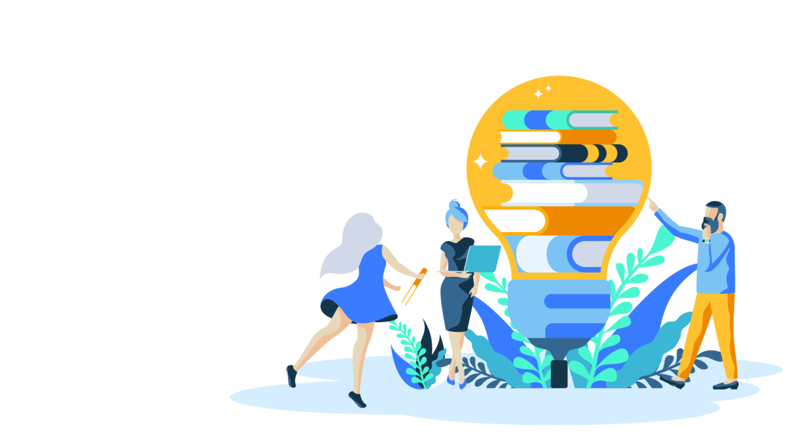
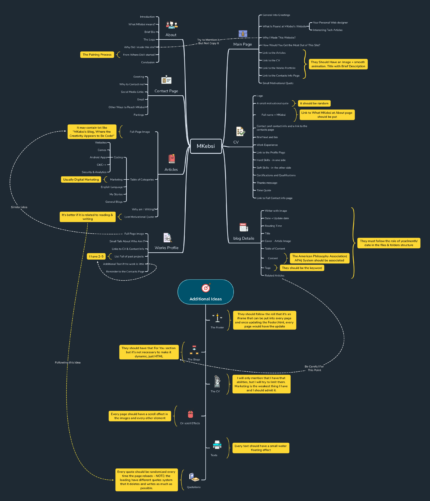

Who Is MKebsi, What Does It Means and Why He Built This Site?
What Does "MKebsi" Means?
MKebsi is an abbreviated version of my full name, Mohammed Alkebsi, but instead of writing MAlkebsi, I wrote it like MKebsi since in Arabic, the word "AL" have the same usage of the definite article "The". As a family name, Arabic people used to make their family names definite to have a great respect among the others. After all, I deleted the "The" and wrote it everywhere and used it as a trademark or logo.
Who Am I?
I am working as a full stack websites developer and a digital marketer. I am also studying computer science at Harvard, but it is just a course. Expeditiousness was the main thing I thought of while working on any single thing.
Working at Freelancer, UpWork, Envato Elements and Hook Studio was a real success road that polished my passion and turn it into a professional career.
My main goal is to be a professional computer science specialist working with websites, video games, android apps and windows/mac softwares. I think that seems too much, but once I dream, I make it limitless so that it can be achieved.
The biggest attainment I have done was being a certified individual from Google, Aalto University, Helsinki University, The Open University, SEMRush Academy, Hasso Plattner Institute (HPI), Template Monster, HackerRank and freeCodeCamp.org. After all this, I am also willing to register for a Bachelor degree from University of London, and I want to have some Micro Bachelors from Edx and its partners. I am also currently attending (or let's say watching) CS50's introduction to computer science and CS50 Web Development classes taught by Prof.David J. Malan and assisted by Brain Yu at Harvard University.
What About the Logo?
This logo was a special gift from the amazing team at Hook Studio. I seemed simple, modern and greatly relative to what any websites designer or developer would love. After all, I think it represents me as well as Hook Studio, too.
What Was The Main Reason of Creating This Website?
The story started long ago, in 2018. I was about to start the high school. It was the summer vacation, and that deep question came to my mind. "What am I going to study at college?". It was a real hard question, but I have seen that I am already in love with the technology, so I started search about the best tech jobs in the world.
One of them was making video games, and I loved it. I started learning it, but it was extremely difficult for me since I didn't know English at all and the Arabic resources were too limited.
In 2019's summer vacation, after one year, I started explaining my enthusiasm in tech to one of my friends who was studying it at college, and I told him that games programming was hard. He gave me some Arabic pdfs on programming essentials and websites development. I really loved how a person can do something like a website with only code.
Once I started, my mom decided that me and my brother should start learning English. This was weird but also the best decisions my mom have ever made form me. Three months, and I was able to write and read in English, so I started searching in English.
Then I joined some college students who have encouraged their professor to teach them some special courses in programming. We used W3Schools as the main reference for that. It was one of the most pleasant moments in my life because the challenges were so exciting, and we were all full of amazing momentum.
After all, this was the final project at that course, but their were no particles in it, no glitches and no illustrations. I only made a very simple, water effect. Lastly, I updated it to make it as my personal website and published it to the public.
How Dose the Process of Rebuilding the Site Goes?
Most of the time, I start with a plan and try to keep going with the actual plan. First of all, I usually make a small brainstorming for the resources available, interdependencies, rabbit holes (the things that may trap me), technologies, effects, styles and the main features

After that, I also start with a simple rough draft, and then try to git the style and make a final prototype. This is how I start and end making a web project, but this one have skipped these to processes since it was initially made long ago.
Then, after having a clear view of what am I going to do, I head to work in the client-side (e.i. designing, what a user can see). After having done with the client-side, I start programming and data managing. This would, as I hope, be the best process i could start and end with.
In Conclusion
All this was just a friendly talk. I did all this and wrote too much because I don't want someone to enter my "About Page" and doesn't find what he was looking for. I felt as I am filling a FAQs page and not anything more, but I hope that it tells you who am I, and why I made this. If there is something you want to know about, feel free to contact me any time.